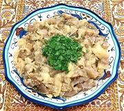

|
Eggplant SaladTurkey - Patilican Salatasi | ||||
| Serves: Effort: Sched: DoAhead: |
6 salad *** 1-1/2 hrs Yes |
It's hard to envision a Turkish dinner without eggplant. This salad fills that need, but like other very simple recipes, ingredient quality is primary - use your very best Olive Oil. | |||
|
3 1 2 ----- 1 1/4 2 1/2 ----- |
# T c --- cl c T t --- |
Eggplants (1) Lemon Juice Water -- Dressing Garlic Olive Oil ExtV Lemon Juice Salt ----------- |
Make - (1-1/2 hr - 20 min work)
|